|
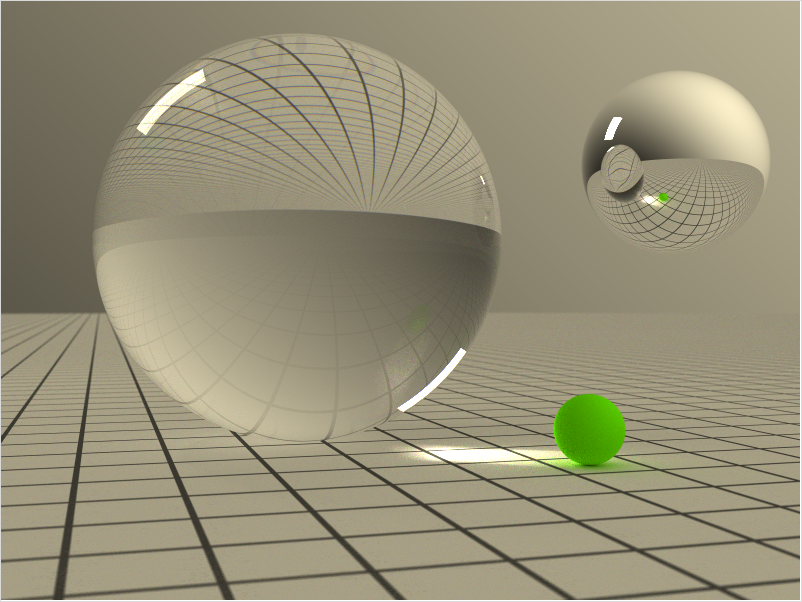
May 2011. Solid glass ball with pronounced caustic, spectral sampling.
1024 paths per pixel.
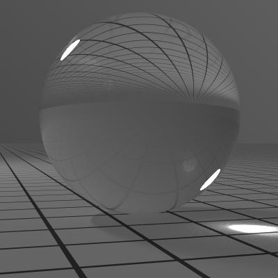
June 2007. Solid glass ball with pronounced caustic.
6400 paths per pixel.
OpenEXR format.
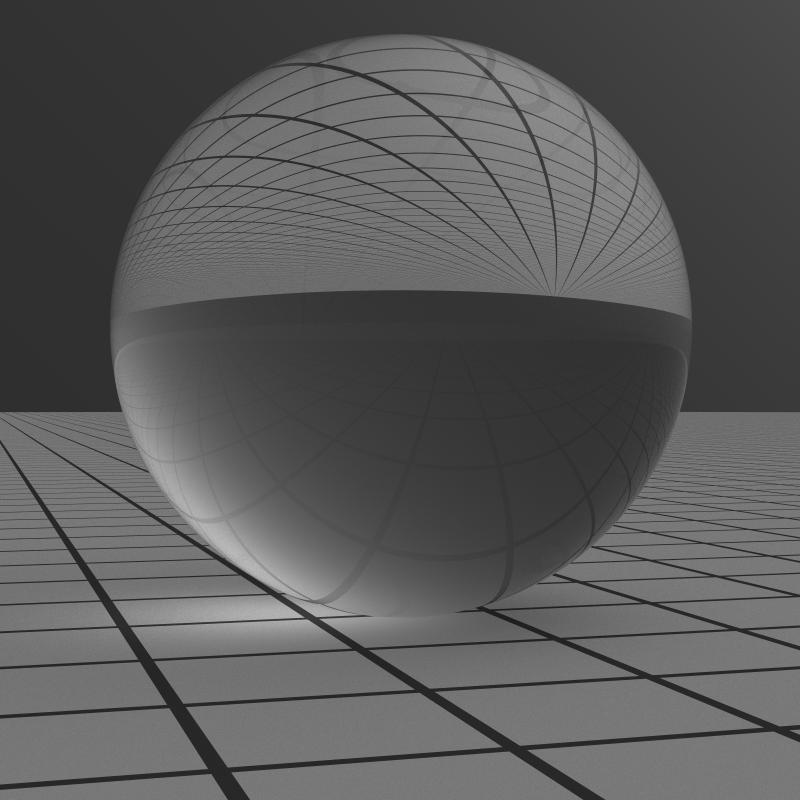
June 2007. Solid glass ball.
4096 paths per pixel.
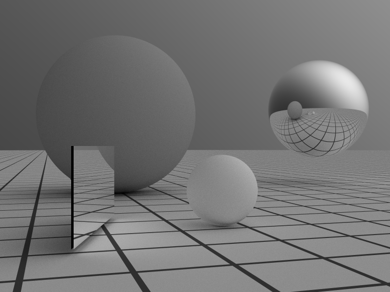
May 2007. Same geometry as previous picture, but with smarter sampling
strategies.
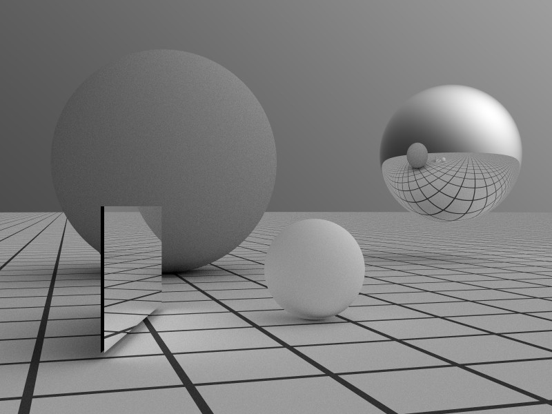
March 2007. Three balls and a square.
3 hours 46 minutes, 1000 paths per pixel, 850.7M rays total.
Also available in PNG and
OpenEXR formats.
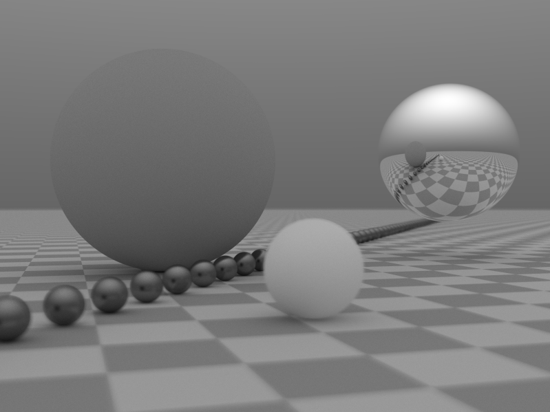
March 2007. Depth of field.
About 7.5 hours, 5000 paths per pixel, probably 150k-ish rays/s.
March 2007. Glossy ball to the right.
Three hours, 2000 paths per pixel, 154k rays/s.
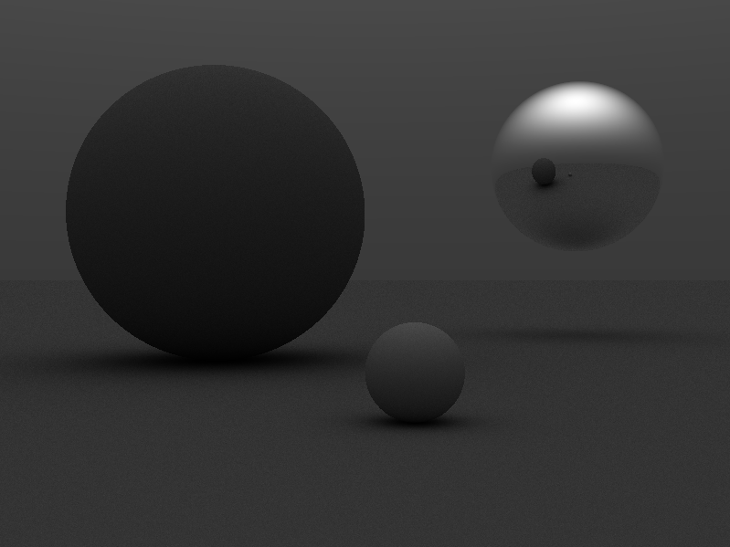
March 2007. 1000 paths per pixel.
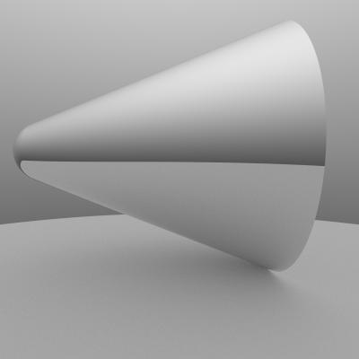
December 2000. Mirror cone casting a very soft shadow on a matte surface.
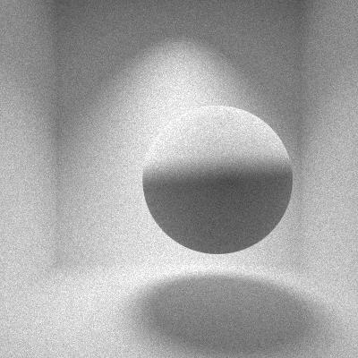
December 2000. A room with diffuse surfaces lit through a hole in the
ceiling.
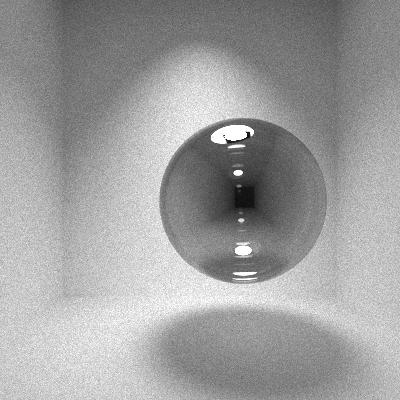
December 2000. Same room with mirror ball.
To appear soon.
December 2000. Same room with glossy ball.
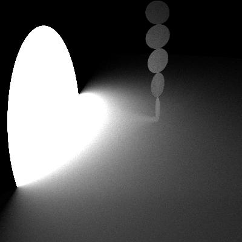
December 2000. The bright surface is a light-emitting disc sitting
half-way through the floor. There's a black disc just behind it,
which absorbs all light going to the left. The floor and the five
small discs are diffuse surfaces. Note how the bottom disc faintly
reflects light back at the floor.
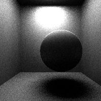
This is a room with diffuse walls and a ball lit from above by an area
light near the ceiling. Unfortunately, an error in the lighting model
makes everthing, especially the ball, too dark. 1000 paths per pixel.
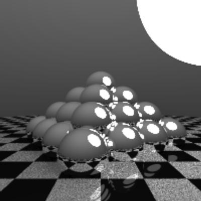
January 1998.
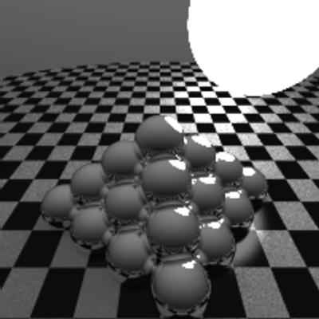
January 1998.
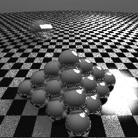
January 1998. There is a motion-blurred sphere in the background.
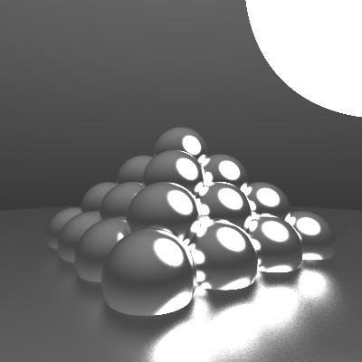
January 1998. Blurred specular surfaces, 1024 paths per pixel.
January 1998. Blurred specular surfaces, 256 paths per pixel.
| {kind=link}